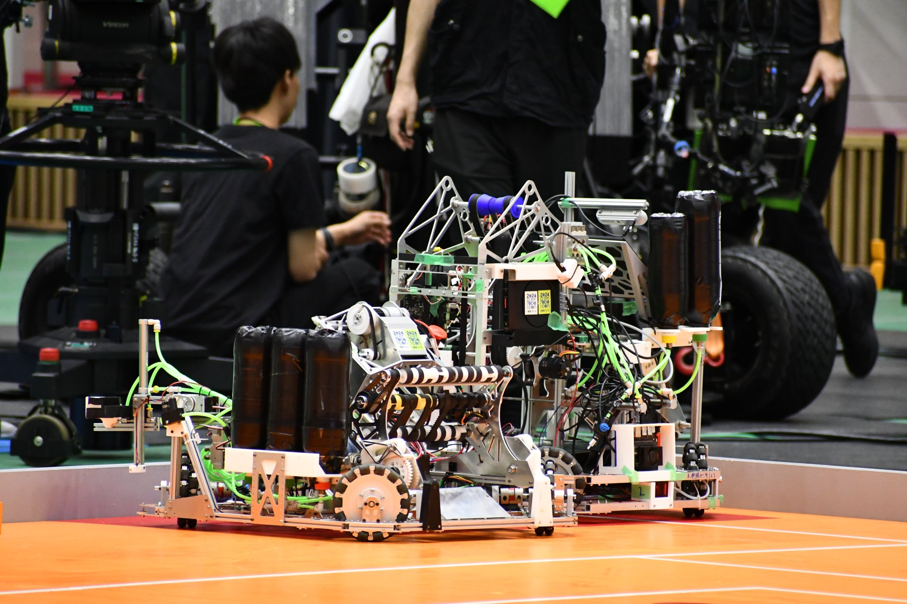
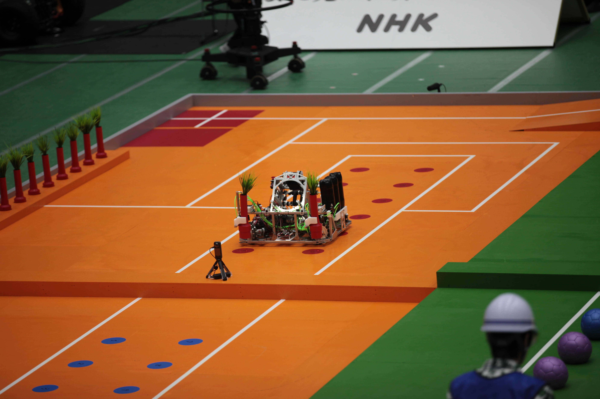

NHK学生ロボコン 2024 担当: 手動機R1・自律機R2 メカ設計 / 部品加工 / 選手


開発のポイント
プロジェクトのメインメンバーが5人、下級生を含めても8人という少人数体制の中、大工大初となる完全自律機の製作が必須でした。 チーム目標を「全国大会出場のための最低限の機能実装」と定め、個人的なこだわりを捨ててチームの成功に注力した結果、2年連続の全国大会出場を達成しました。 （詳細レポート執筆中）